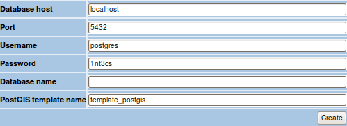

EOP catalogue database instance creation
Starting from Toolbox 8.0 ebRIM catalogues are supported. In
particular a service can be instantiated in a way to implemented an EOP
ebRIM catalogue without the need of providing any scripting logic (
mandatory in other cases). The finalization of this kind of services foresees the
definition of a database schema. The user shall provide the name of an instance already
available in Postgres. If a new db instance shall be created, a Toolbox wizard will perform
the task automatically, except for a step which shall be executed manually once
for each postgres installation.
This step depend highly on how Postgres and Postgis have been
installed. In the following we describe the step to perform
in case the tools have been installed under Ubuntu using the
apt-get command.
- Login as postgres user using the following command:
$> sudo su postgres
- Create the template database using the following command:
$> createdb template_postgis
- Enable plpqsql on the newly created database using the following command::
$> createlang plpgsql template_postgis
- Run the postgis scripts on database "template_postgis" to enable
spatial functionality
$> psql -d template_postgis -f /usr/share/postgresql-8.3-postgis/lwpostgis.sql
$> psql -d template_postgis -f /usr/share/postgresql-8.3-postgis/spatial_ref_sys.sql
The name of the template database (template_postgis in the steps above) can be freely chosen.
Once the template database have been created, multiple catalogue
database schemas can be created through the Toolbox administration web
pages.
To perform this task access the administration web pages, click on
Tools and the click on "Create EOP database instance" link.
A form is shown

The following paramenters shall be provided:
- Database host: address of the host where Postgres is installed
- Port: listening port for Postgres
- Username: username of a user with rights for database schema creation (e.g. postgres)
- Password: password of the user provided in the previous step
- Database name: name of the new database schema
- PostGIS template name: name of the template schema.
To trigger database creation simply click on the "create" button. The
page is refreshed providing the execution result of the procedure.